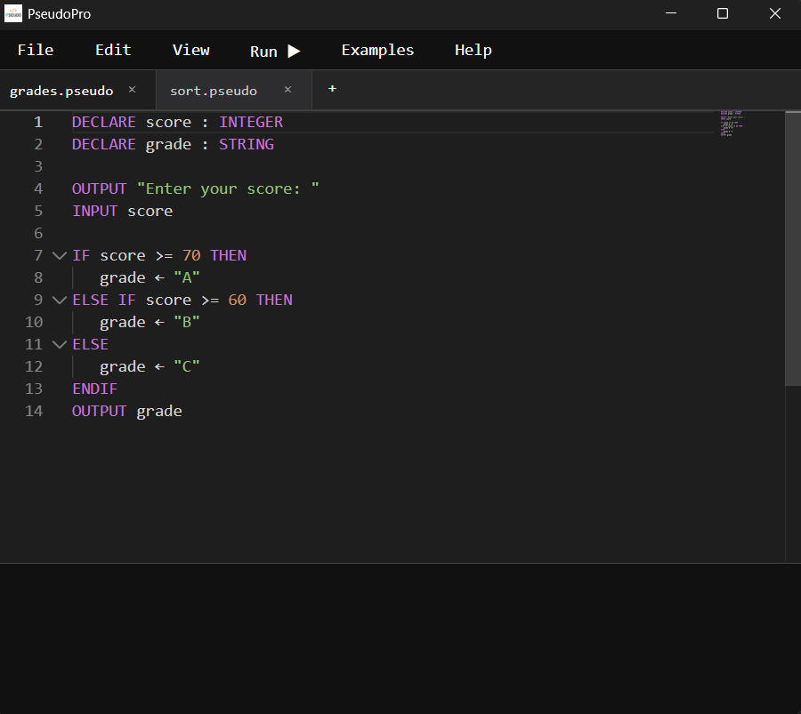
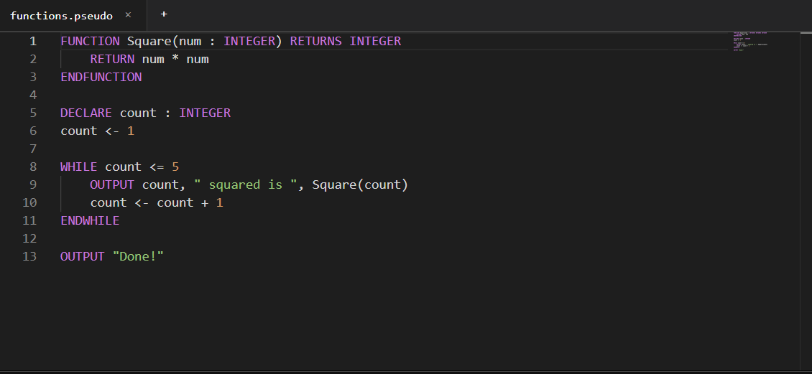
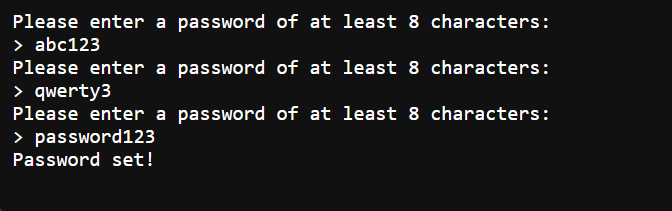
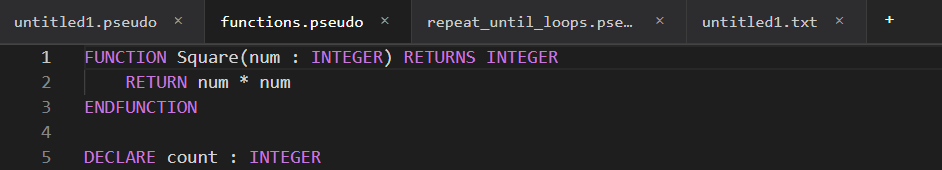

Pseudo Pro is a desktop IDE built for Cambridge O and A Level Computer Science students. Proper syntax highlighting, live execution with interactive input, multi-tab file management — everything you need to practise, nothing you don't.

Click through each feature to see exactly what Pseudo Pro can do.
Pseudo Pro is built on the same engine that powers VS Code. That means a professional editing experience right out of the box, with a custom Cambridge pseudocode language layer on top.

When you run your pseudocode, output streams to the terminal in real time. If your program uses INPUT, execution pauses and waits — you type your answer and the program continues exactly as it would in a real run.

Work on multiple pseudocode files at once. Tabs show which files have unsaved changes, and closing a file warns you before anything is lost. A dedicated workspace folder keeps your saved files organised.
.pseudo and .txt filessaved/ workspace folder keeps everything in one place
Every feature implemented in the current version of Pseudo Pro.
.pseudo and .txt file supportsaved/ workspace folderINPUT